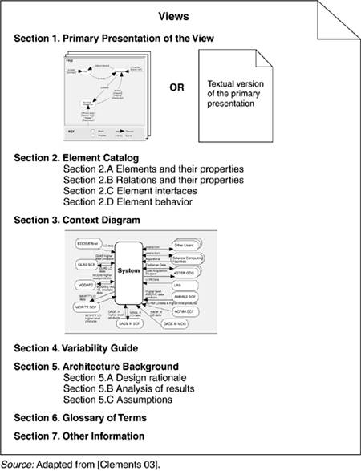
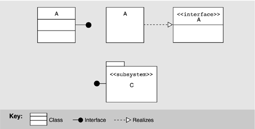
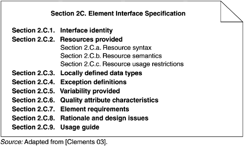

9.4 Documenting a View
There is no industry-standard template for documenting a view, but the seven-part standard organization that we suggest in this section has worked well in practice. First of all, whatever sections you choose to include, make sure to have a standard organization. Allocating specific information to specific sections will help the documentation writer attack the task and recognize completion, and it will help the documentation reader quickly find information of interest at the moment and skip everything else.
Primary presentation shows the elements and the relationships among them that populate the view. The primary presentation should contain the information you wish to convey about the system (in the vocabulary of that view) first. It should certainly include the primary elements and relations of the view, but under some circumstances it might not include all of them. For example, you may wish to show the elements and relations that come into play during normal operation, but relegate error handling or exceptional processing to the supporting documentation. The primary presentation is usually graphical. In fact, most graphical notations make their contributions in the form of the primary presentation and little else. If the primary presentation is graphical, it must be accompanied by a key that explains, or that points to an explanation of, the notation or symbology used.
Sometimes the primary presentation can be tabular; tables are often a superb way to convey a large amount of information compactly. An example of a textual primary presentation is the A-7E module decomposition view illustrated in Chapter 3. A textual presentation still carries the obligation to present a terse summary of the most important information in the view. In Section 9.6 we will discuss using UML for the primary presentation. Element catalog details at least those elements and relations depicted in the primary presentation, and perhaps others. Producing the primary presentation is often what architects concentrate on, but without backup information that explains the picture, it is of little value. For instance, if a diagram shows elements A, B, and C, there had better be documentation that explains in sufficient detail what A, B, and C are, and their purposes or the roles they play, rendered in the vocabulary of the view. For example, a module decomposition view has elements that are modules, relations that are a form of "is part of," and properties that define the responsibilities of each module. A process view has elements that are processes, relations that define synchronization or other process-related interaction, and properties that include timing parameters.
In addition, if there are elements or relations relevant to the view that were omitted from the primary presentation, the catalog is where those are introduced and explained.
The behavior and interfaces of elements are two other aspects of an element catalog; these will be discussed shortly. Context diagram shows how the system depicted in the view relates to its environment in the vocabulary of the view. For example, in a component-and-connector view you show which component and connectors interact with external components and connectors, via which interfaces and protocols. Variability guide shows how to exercise any variation points that are a part of the architecture shown in this view. In some architectures, decisions are left unbound until a later stage of the development process, and yet the architecture must still be documented. An example of variability is found in software product lines where the product line architecture is suitable for multiple particular systems (discussed in Chapter 14). A variability guide should include documentation about each point of variation in the architecture, including
- the options among which a choice is to be made. In a module view, the options are the various versions or parameterizations of modules. In a component-and-connector view, they might include constraints on replication, scheduling, or choice of protocol. In an allocation view, they might include the conditions under which a software element would be allocated to a particular processor. - the binding time of the option. Some choices are made at design time, some at build time, and others at runtime. Architecture background explains why the design reflected in the view came to be. The goal of this section is to explain to someone why the design is as it is and to provide a convincing argument that it is sound. An architecture background includes
- rationale, explaining why the decisions reflected in the view were made and why alternatives were rejected. - analysis results, which justify the design or explain what would have to change in the face of a modification. - assumptions reflected in the design. Glossary of terms used in the views, with a brief description of each. Other information. The precise contents of this section will vary according to the standard practices of your organization. They might include management information such as authorship, configuration control data, and change histories. Or the architect might record references to specific sections of a requirements document to establish traceability. Strictly speaking, information such as this is not architectural. Nevertheless, it is convenient to record it alongside the architecture, and this section is provided for that purpose. In any case, the first part of this section must detail its specific contents.
Figure 9.1 summarizes the parts of the documentation just described.

DOCUMENTING BEHAVIOR
Views present structural information about the system. However, structural information is not sufficient to allow reasoning about some system properties. Reasoning about deadlock, for example, depends on understanding the sequence of interactions among the elements, and structural information alone does not present this sequencing information. Behavior descriptions add information that reveals the ordering of interactions among the elements, opportunities for concurrency, and time dependencies of interactions (at a specific time or after a period of time).
Behavior can be documented either about an element or about an ensemble of elements working in concert. Exactly what to model will depend on the type of system being designed. For example, if it is a real-time embedded system, you will need to say a lot about timing properties and the time of events. In a banking system, the sequence of events (e.g., atomic transactions and rollback procedures) is more important than the actual time of events being considered. Different modeling techniques and notations are used depending on the type of analysis to be performed. In UML, sequence diagrams and statecharts are examples of behavioral descriptions. These notations are widely used.
Statecharts are a formalism developed in the 1980s for describing reactive systems. They add a number of useful extensions to traditional state diagrams such as nesting of state and "and" states, which provide the expressive power to model abstraction and concurrency. Statecharts allow reasoning about the totality of the system. All of the states are assumed to be represented and the analysis techniques are general with respect to the system. That is, it is possible to answer a question such as Will the response time to this stimulus always be less than 0.5 seconds?
A sequence diagram documents a sequence of stimuli exchanges. It presents a collaboration in terms of component instances and their interactions and shows the interaction arranged in time sequence. The vertical dimension represents time and the horizontal dimension represents different components. Sequence diagrams allow reasoning based on a particular usage scenario. They show how the system reacts to a particular stimulus and represent a choice of paths through the system. They make it possible to answer a question such as What parallel activities occur when the system is responding to these specific stimuli under these specific conditions?
DOCUMENTING INTERFACES
An interface is a boundary across which two independent entities meet and interact or communicate with each other. Our definition of software architecture in Chapter 2 made it clear that elements' interfaces—carriers of the properties externally visible to other elements—are architectural. Since you cannot perform analyses or system building without them, documenting interfaces is an important part of documenting architecture.
Documenting an interface consists of naming and identifying it and documenting its syntactic and semantic information. The first two parts constitute an interface's "signature." When an interface's resources are invokable programs, the signature names the programs and defines their parameters. Parameters are defined by their order, data type, and (sometimes) whether or not their value is changed by the program. A signature is the information that you would find about the program, for instance, in an element's C or C++ header file or in a Java interface.
Signatures are useful (for example, they can enable automatic build checking), but are only part of the story. Signature matching will guarantee that a system will compile and/or link successfully. However, it guarantees nothing about whether the system will operate successfully, which is after all the ultimate goal. That information is bound up in the semantics to the interface, or what happens when resources are brought into play.
An interface is documented with an interface specification, which is a statement of element properties the architect chooses to make known. The architect should expose only what is needed to interact with the interface. Put another way, the architect chooses what information is permissible and appropriate for people to assume about the element, and what is unlikely to change. Documenting an interface is a matter of striking a balance between disclosing too little information and disclosing too much. Too little information will prevent developers from successfully interacting with the element. Too much will make future changes to the system more difficult and widespread and make the interface too complicated for people to understand. A rule of thumb is to focus on how elements interact with their operational environments, not on how they are implemented. Restrict the documentation to phenomena that are externally visible.
Elements that occur as modules often correspond directly to one or more elements in a component-and-connector view. The module and component-and-connector elements are likely to have similar, if not identical, interfaces and documenting them in both places would produce needless duplication. To avoid that, the interface specification in the component-and-connector view can point to the interface specification in the module view, and only contain the information specific to its view. Similarly, a module may appear in more than one module view—such as the module decomposition or uses view. Again, choose one view to hold the interface specification and refer to it in the others.
A Template for Documenting Interfaces
Here is a suggested standard organization for interface documentation. You may wish to modify it to remove items not relevant to your situation, or add items unique to it. More important than which standard organization you use is the practice of using one. Use what you need to present an accurate picture of the element's externally visible interactions for the interfaces in your project.
Interface identity.
When an element has multiple interfaces, identify the individual interfaces to distinguish them. This usually means naming them. You may also need to provide a version number. Resources provided.
The heart of an interface document is the resources that the element provides. Define them by giving their syntax, their semantics (what happens when they are used), and any restrictions on their usage. Several notations exist for documenting an interface's syntax. One is the OMG's Interface Definition Language (IDL), used in the CORBA community. It provides language constructs to describe data types, operations, attributes, and exceptions. The only language support for semantic information is a comment mechanism. Most programming languages have built-in ways to specify the signature of an element. C header (.h) files and Ada package specifications are two examples. Finally, using the <<interface>> stereotype in UML (as shown in Figure 9.4) provides the means for conveying syntactic information about an interface. At a minimum, the interface is named; the architect can also specify signature information.
Resource syntax.
This is the resource's signature. The signature includes any information another program will need to write a syntactically correct program that uses the resource. The signature includes the resource name, names and logical data types of arguments (if any), and so forth.
Resource semantics.
This describes the result of invoking the resource. It might include
- assignment of values to data that the actor invoking the resource can access. It might be as simple as setting the value of a return argument or as far-reaching as updating a central database. - events that will be signaled or messages that will be sent as a result of using the resource. - how other resources will behave in the future as the result of using this resource. For example, if you ask a resource to destroy an object, trying to access that object in the future through other resources will produce quite a different outcome (an error). - humanly observable results. These are prevalent in embedded systems; for example, calling a program that turns on a display in a cockpit has a very observable effect: The display comes on. In addition, the statement of semantics should make it clear whether the resource execution will be atomic or may be suspended or interrupted. The most widespread notation for conveying semantic information is natural language. Boolean algebra is often used to write down preconditions and postconditions, which provide a relatively simple and effective method for expressing semantics. Traces are also used to convey semantic information by writing down sequences of activities or interactions that describe the element's response to a specific use.
Resource usage restrictions.
Under what circumstances may this resource be used? Perhaps data must be initialized before it can be read, or a particular method cannot be invoked unless another is invoked first. Perhaps there is a limit on the number of actors that can interact via this resource at any instant. Perhaps only one actor can have ownership and be able to modify the element whereas others have only read access. Perhaps only certain resources or interfaces are accessible to certain actors to support a multi-level security scheme. If the resource requires that other resources be present, or makes other assumptions about its environment, these should be documented.

Data type definitions.
If any interface resources employ a data type other than one provided by the underlying programming language, the architect needs to communicate the definition of that data type. If it is defined by another element, then a reference to the definition in that element's documentation is sufficient. In any case, programmers writing elements using such a resource need to know (a) how to declare variables and constants of the data type; (b) how to write literal values in the data type; (c) what operations and comparisons may be performed on members of the data type; and (d) how to convert values of the data type into other data types, where appropriate. Exception definitions.
These describe exceptions that can be raised by the resources on the interface. Since the same exception might be raised by more than one resource, it is often convenient to simply list each resource's exceptions but define them in a dictionary collected separately. This section is that dictionary. Common exception-handling behavior can also be defined here. Variability provided by the interface.
Does the interface allow the element to be configured in some way? These configuration parameters and how they affect the semantics of the interface must be documented. Examples of variability include the capacities of visible data structures and the performance characteristics of underlying algorithms. Name and provide a range of values for each configuration parameter and specify the time when its actual value is bound. Quality attribute characteristics of the interface.
The architect needs to document what quality attribute characteristics (such as performance or reliability) the interface makes known to the element's users. This information may be in the form of constraints on implementations of elements that will realize the interface. Which qualities you choose to concentrate on and make promises about will depend on context. Element requirements.
What the element requires may be specific, named resources provided by other elements. The documentation obligation is the same as for resources provided: syntax, semantics, and any usage restrictions. Often it is convenient to document information like this as a set of assumptions that the element's designer has made about the system. In this form, they can be reviewed by experts who can confirm or repudiate the assumptions before design has progressed too far. Rationale and design issues.
As with rationale for the architecture (or architectural views) at large, the architect should record the reasons for an element's interface design. The rationale should explain the motivation behind the design, constraints and compromises, what alternative designs were considered and rejected (and why), and any insight the architect has about how to change the interface in the future. Usage guide.
Item 2 and item 7 document an element's semantic information on a per resource basis. This sometimes falls short of what is needed. In some cases semantics need to be reasoned about in terms of how a broad number of individual interactions interrelate. Essentially, a protocol is involved that is documented by considering a sequence of interactions. Protocols can represent the complete behavior of the interaction or patterns of usage that the element designer expects to come up repeatedly. If interacting with the element via its interface is complex, the interface documentation should include a static behavioral model such as a statechart, or examples of carrying out specific interactions in the form of sequence diagrams. This is similar to the view-level behaviors presented in the previous section, but focused on a single element.
Figure 9.2 summarizes this template which is an expansion of section 2.C from Figure 9.1.


|